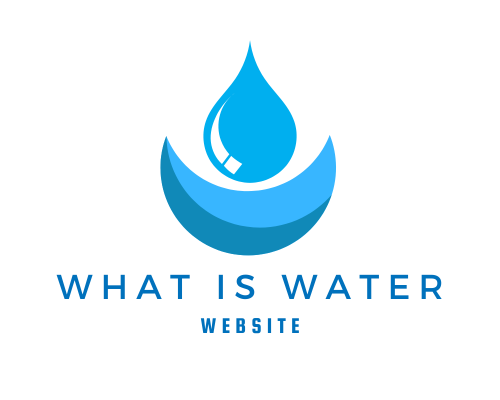
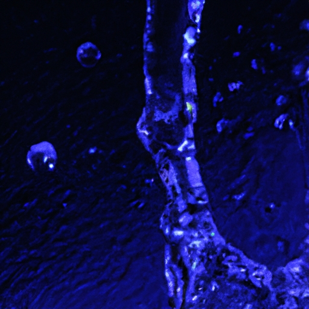

Hydrological Cycle
Hydrological Cycle
Evaporation and transpiration
Condensation and cloud formation
Precipitation and rain patterns
Surface runoff and river systems
Groundwater flow and aquifers
Snowmelt and glacial processes
Water storage in oceans lakes and reservoirs
Soil moisture and infiltration
Water balance and budgeting
Human impact on the hydrological cycle
Marine Ecosystems
Marine Ecosystems
Coral reefs and their biodiversity
Mangrove forests as coastal protectors
Ocean currents and climate regulation
Deepsea habitats and extremophiles
Intertidal zones and estuarine ecosystems
Marine food webs and trophic levels
Freshwater Ecosystems
Freshwater Ecosystems
Conservation efforts for marine species
Marine biogeochemical cycles
Impact of global warming on oceans
Water Resource Management
Water Resource Management
Rivers streams and creeks ecosystems
Lakes ponds wetlands habitats
Biodiversity in freshwater environments
Aquatic plants role in oxygenation
Freshwater fish species diversity
Invasive species impact on freshwater systems
Pollution threats to freshwater sources
Conservation strategies for freshwater biomes
Role of wetlands in flood control
Importance of riparian buffers
Cultural Significance of Water
Cultural Significance of Water
Sustainable water use practices
Desalination technologies for fresh water supply
Wastewater treatment processes
Rainwater harvesting techniques
Management of water during drought conditions
Transboundary water resource politics
Infrastructure for water distribution
Agricultural irrigation efficiency
Urban water demand management
Impact of climate change on water resources
About Us
Contact Us
Marine biogeochemical cycles
Bottled Water
Marine biogeochemical cycles describe the complex movements and transformations of chemical substances within marine environments. These cycles are pivotal for maintaining oceanic ecosystems, regulating climate, and supporting life both in the sea and on land. The elements that cycle through the oceans include crucial nutrients such as carbon, nitrogen, phosphorus, and others.
The carbon cycle is paramount due to its role in climate regulation. Carbon dioxide absorbed by ocean waters contributes to primary production when photosynthetic organisms convert CO2 into organic matter.
Hydroponics
This process supports a vast array of marine life while also sequestering carbon from the atmosphere. However, increased atmospheric CO2 levels lead to ocean acidification, adversely affecting many marine organisms.
Marine biogeochemical cycles - Hydroponics
Hydroponics
Water Treatment
Molecule
Nitrogen cycling involves various forms such as ammonia, nitrate, and nitrogen gas. Nitrogen-fixing bacteria convert atmospheric nitrogen into forms usable by living organisms – a critical step that underpins productivity in areas where nitrogen is scarce. Conversely, denitrifying bacteria can return nitrogen to the atmosphere, thereby completing the cycle.
Phosphorus is another key nutrient with a less dynamic but essential marine cycle. It typically enters oceans via rivers or runoff and becomes part of sediments over time after being used by organisms. Unlike other cycles, there's no gaseous phase for phosphorus; hence its availability often limits biological activity.
These biogeochemical cycles are interconnected; changes in one can disrupt others leading to consequences like algal blooms or hypoxic zones from excess nutrients (eutrophication). With human activities altering these natural processes—via pollution or climate change—it becomes increasingly important to understand and safeguard these fundamental aspects of our planet's functioning.
In summary, marine biogeochemical cycles encompass intricate systems governing nutrient flow within oceans.
Water Treatment
They are indispensable for sustaining diverse aquatic lifeforms and stabilizing Earth’s climate patterns but face disturbances from anthropogenic influences demanding conscientious stewardship for future generations' benefit.

Molecule
Hydrological Cycle
Check our other pages :
Conservation efforts for marine species
Lakes ponds wetlands habitats
Hydrological Cycle
Deepsea habitats and extremophiles
Rainwater harvesting techniques
Frequently Asked Questions
What are marine biogeochemical cycles, and why are they important in the context of the Fascination World of Water?
Marine biogeochemical cycles refer to the natural processes that recycle nutrients like carbon, nitrogen, phosphorus, and other elements within marine ecosystems. They are essential for maintaining the balance of life in oceans by ensuring that essential nutrients are available for marine organisms to survive, grow, and reproduce. These cycles also play a crucial role in regulating Earths climate by controlling the concentration of greenhouse gases such as CO2 in the atmosphere.
How do human activities impact marine biogeochemical cycles?
Human activities such as fossil fuel combustion, deforestation, agriculture runoff, waste disposal, and industrial processes release excessive amounts of nutrients and pollutants into the ocean. This can lead to alterations in biogeochemical cycles resulting in issues like ocean acidification from increased CO2 levels or eutrophication from excess nutrient input which causes harmful algal blooms and dead zones with low oxygen levels detrimental to marine life.
What is the role of phytoplankton in carbon cycling within marine environments?
Phytoplankton plays a pivotal role in the marine carbon cycle through photosynthesis; they absorb CO2 from the atmosphere and convert it into organic matter using sunlight. Part of this organic carbon is used for their growth while some is transferred through food webs when phytoplankton are consumed by other organisms. Additionally, when phytoplankton die or produce waste products, these materials can sink to deeper waters or sediments where they contribute to long-term carbon storage.
Can you explain how nitrogen fixation contributes to nutrient availability in ocean waters?
Nitrogen fixation is a process carried out by certain bacteria and archaea (including those associated with some species of cyanobacteria) which convert atmospheric nitrogen gas (N2) into ammonia (NH3), a form usable by plants including phytoplankton. This process adds new sources of nitrogen to aquatic systems allowing for continued growth where otherwise nitrogen could be limiting due to its consumption by organisms.
What are some methods currently used by scientists to study changes in marine biogeochemical cycles?
Scientists use a range of techniques including satellite remote sensing for large-scale observations; direct sampling via research vessels for water column chemistry analysis; deployment of autonomous underwater vehicles (AUVs) equipped with sensors; sediment core analysis for historical records; laboratory experiments on isolated organisms’ responses under controlled conditions; and computer modeling to simulate past changes and predict future shifts under different climate scenarios or anthropogenic impacts.